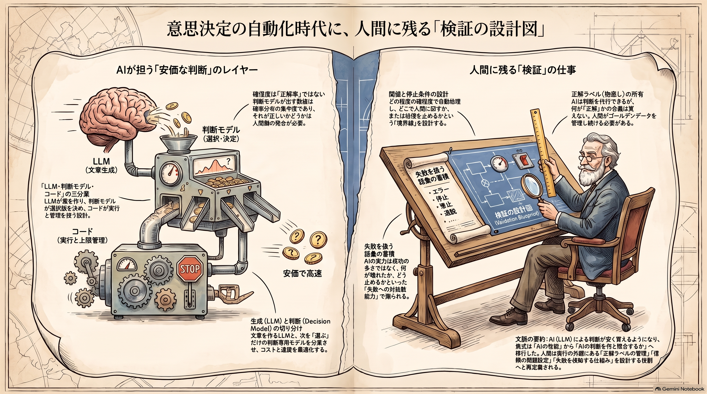

Weekly Insights: 2026-W40（2026-09-28〜10-04）
今週のホットトピック
- jev 生成しない判断専用モデル Jev — 文章を書かず、渡した選択肢に確率と確信度だけを返す TypeSafe のモデル。発表ポストは約5.8万ブックマークを集め、1週間で Claude Code・Codex・Vercel・Cloudflare まで呼び出し口が広がりました。
- decision-layer-model 「LLMが作り、判断モデルが決め、コードが実行する」 — エージェントの中の小さな分岐を、生成モデルから独立した部品に切り出す設計論です。
- effort-level-selection effort は「どこまで確かめるか」のつまみ — Anthropic の Thariq（@trq212）が Opus 5.5 と Fable 5.1 を effort 別に走らせ、効くタスクと効かないタスクを切り分けました。
- interactive-ai-slides 見る人が自分の手で確かめられる資料 — AIスライドの主張を、押すと根拠が開き、スライダーで再計算される「動く資料」にする手法です。
深掘り
jev 生成しない判断専用モデル Jev Jev の要点は賢さではなく出力の形です。Choice（選ぶ）・Score（採点）・Noul（yes/no の確率）の3型しか返さないため、入力100万トークン0.042ドル・出力無料という価格で、分岐の判断だけを桁違いに安く回せます。ただし読むべきは数字の中身のほうで、TypeSafe 自身の評価の67.8%は人手の正解ではなく「GPT-6 Astra と Claude Fable 5.1 の回答の平均」との一致率だと @karoukun_ai が指摘しています。確信度も正答率ではないと、紹介記事の全員が注意しています。
decision-layer-model 生成と判断の三分業 @0xCodila・@29meat_ai・@0xMovez の3者が、ほぼ同じ時期に同じ切り分けを描いています。判断を部品にすると、検査・価格付け・差し替えができるようになる、という主張です。実務で効くのは「問いの本文に基準を書く（質問IDはモデルに届かない）」「日付・件数・大小比較はコードでやる」「確信度の閾値は自分のラベル付き例で決める」といった勘所です。@akira_papa_IT は、判定基準をコードとしてレビューし、ゴールデンデータで CI 回帰テストする型まで示しています。判断を切り出すことは、判断をテスト可能にすることと同義になっています。
effort-level-selection effort の効き目と限界 Thariq の実測で重要なのは、高 effort が効く条件をはっきりさせた点です。効くのは隠れたエッジケースが多いタスクで、例は Opus 5.5 の CLI 線形計画ソルバ（low 0/5 → high 5/5）です。高 effort 側は別ソルバとの突き合わせや計時を自分から行っていました。逆に「アプローチ自体の誤りは effort を上げても直らない」とも述べています。effort で買えるのは検証の量であり、何を正解とみなすかまでは買えない、と読めます。
interactive-ai-slides 主張を見る側が確かめる資料 @uchita_success の中心主張は「動かし方はセンスで決めない」ことです。スライドの論理構造（6種）から動きを1対1で決め、1ページの動きは1つに絞ります。狙いは、見出しの主張を見る人が自分の手で確かめられるようにすることです。今週の他の素材が「AIの判断をどう確かめるか」を扱っていたのに対し、こちらは「人に出す主張をどう確かめてもらうか」を扱っています。確かめる手段を成果物の側に埋め込む、という同じ設計の人間向け版です。
今週の中心テーマ
判断が安く・型付きで買えるようになった週に、素材が揃って指していたのは判断の性能ではなかった。その判断を何と照合するか——正解ラベル・閾値・検証の置き場——が、こちら側の仕事として残るということだった。

Jev 周辺の記事は立場が違っても、同じ所で立ち止まっています。@zodchiii は「型の保証と正しさの保証は別物」と書き、@MakeAI_CEO は「自動処理した案件の正解率と、全体の何割を自動処理できたかをセットで見る」ことを強調します（jev-codex-integration）。難しい案件を人に回せば、自動処理部分の正解率はいくらでも高く見えるからです。Thariq の effort 実験も同じ形をしています。確かめる手間は買えても、何が正しいかの定義は買えません（effort-level-selection）。
先週までとの違いを整理します。2026-W35 は失敗をどう語り、どう残すかの話でした。2026-W37 は、残したものをどう減らすかの話でした。今週はその手前で、「判定が当たったか外れたか」を決める物差し自体を誰が持つのか、という問いです。判断モデルが安くなるほど判定の回数は増えます（@0xCodila がジェボンズのパラドックスとして挙げる現象です）。その分、物差しの無い判定が静かに積み上がります。
このvaultの実データで確かめました。wiki/tier_log.jsonl の Tier 判定618件は、すべて determined_by: llm です。確信度は high 548件・medium 70件で、low は0件でした。人に回す経路が一度も発火していないことになります。一方 .claude/skills/wiki-ingest/LESSONS.md には、人が直した判定事例が日付付きで31件あります（粒度判定28・運用2・カテゴリ判定1）。これは「外れた側」のラベルとしては使えます。ただし当たった判定の記録が無いため、正解率の分母が作れません。判断モデルに ingest の判定を移すかどうかを検討する以前に、比べる物差しがまだ片側しか無い状態です。
反証も一つ置いておきます。このvaultでは、別モデルにページを再採点させる独立審判（grounding_check.py）を誤検知が支配的だったため撤去しています（docs/superpowers/specs/2026-07-05-verification-scaffolding-slimdown-design.md）。原因は、審判にソースと本文しか渡らず「迷ったらFLAG」に偏っていた設計でした。判断モデルを入れても、正解ラベルと閾値の調整が無ければ同じ所に戻る可能性があります。「安い判定器を足せば検証になる」という仮定は、このvault自身の経験では一度外れています（この接続は本 wiki 側の解釈で、各著者の主張ではありません）。
根拠ページ
- jev（→ 今週のホットトピック#1）
- decision-layer-model（→ 今週のホットトピック#2）
- effort-level-selection（→ 今週のホットトピック#3）
- interactive-ai-slides（→ 今週のホットトピック#4）
- jev-claude-code-integration — Claude Code に Jev をつなぐ3ルートの整理です（@karoukun_ai）。Stop フックで「完了の主張に証拠を求める」jev-belay は、ファイルが変わったのに検査が通っていないときだけ呼ぶという発火条件を持ちます。判定を安くしても呼ぶ回数は絞る、という設計例です。
- jev-codex-integration — 同じ公式スキルを Codex に入れる手順です（@MakeAI_CEO）。調整用と最終確認用のデータを分け、「未実行のテストを成功と書かない」までを試作プロンプトに含めた評価設計が中心です。
- diffusiongemma-jev — Google Gemma 公式が紹介した Jev API 互換モデルです。判断の呼び先を自前の Cloud Run に差し替えられるため、判断レイヤーが特定ベンダーの製品ではなく「交換可能な部品の規格」になりつつある兆候と読めます（推論）。
- claude-opus-5-5 — 捕捉できたのは個人が投稿したシステムプロンプトの冒頭だけで、公式の発表・価格は未収集です（ブックマーク29）。effort 実験の対象モデルとして参照されています。
- senior-engineer-death-spiral — 転職・昇進を機に実力以上を演じて自滅する現象の定義です。元記事の段階・抜け出し方は未収集です。
- kaigai-mifukyuu-business — 米国で儲かっていて日本に未普及の5業態を挙げた記事です。空白は事業そのものより「最初に日本語で説明する側」にある、と @client2728770 は主張します。
既存wikiとの接続
- eval-loop — 「生成→基準採点→閾値未満を止める」品質ゲートの考え方です。判断モデルはこの「基準採点」を安く回す部品にあたります。ただし採点基準と閾値の出どころは eval-loop 側の問題として残ります。今週の素材はその残り方を具体的に見せています。
- graph-reliability-design — 「分類器は確率的、許可されたルートは決定論的」という設計原則です。判断レイヤーの三分業（判断はモデル・実行と上限はコード）は、この分類器の実体として判断モデルを入れた形と読めます。
- claude-code-model-effort — モデル＝何を知っているか、effort＝どこまで徹底するか、という公式の理論解説（Lydia Hallie）です。間違えたら「知らなかったのか、頑張らなかったのか」で切り分けるという枠組みに、Thariq の「アプローチ誤りは effort で直らない」という実測が裏付けを足しています。
sugeta-san への問い
このvaultの ingest で毎回下している判断（Tier・カテゴリ・粒度）のうち、「当たった」と言える記録を持っているものはいくつありますか。
→ 今回数えた範囲では、外れの記録（LESSONS.md の31件）はあり、当たりの記録はどの判定にもありません。判断モデルの導入より先に、1種類の判定だけ正解ラベルを両側で持つところから始めるのが、今週の素材の勧める順番です。候補は、選択肢が閉じていて自分で即答できるカテゴリ判定でしょう。
今週の小アクション（5分）
直近の ingest から10件を選び、カテゴリ判定が正しかったかを自分の目で○×で付けてください。次のコマンドで、直近に新規作成された10ページのパスが出ます。パスの先頭がそのままカテゴリです（動作確認済み）:
git log --since=2026-09-21 --name-only --diff-filter=A --format= -- 'wiki/*/*.md' | grep -v '^wiki/weekly/' | head -10
○×10件がそろえば、jev-codex-integration の言う「最終確認用データ」の最小単位になります。
いますぐAIと一緒に（コピペ）
以下をそのまま Claude Code に貼ると、今週のテーマ「判断を何と照合するか」で、このvaultの ingest 判定の物差しを点検できます。
このリポジトリの ingest で行っている判断を、「判断モデルに切り出せるか」ではなく「正解と照合できるか」の観点で棚卸ししてください。実行や変更はせず、提案だけ出してください。
1. .claude/skills/wiki-ingest/SKILL.md から、毎回発生している判断（Tier・カテゴリ・粒度・既反映チェックなど）を列挙し、
それぞれについて「選択肢が閉じているか」「正解ラベルの記録がどこにあるか（無ければ無いと書く）」を表にする
2. wiki/tier_log.jsonl と .claude/skills/wiki-ingest/LESSONS.md を読み、
各判断について「外れた記録」と「当たった記録」がそれぞれ何件あるかを数える。数えられないものは推測で埋めない
3. 最も少ない手間で両側のラベルをそろえられる判断を1つ選び、
自動処理率と正解率をセットで測るための最小の記録形式（どのファイルに・どの列で）を1案だけ提案する
判断基準は wiki/concepts/jev-codex-integration.md（自動処理率と正解率をセットで見る・調整用と最終確認用のデータを分ける）と
wiki/concepts/decision-layer-model.md（確信度は正答率ではない・閾値はラベル付き例で決める）を参照してください。
さらに読むべきページ
- jev-codex-integration — 導入手順より、後半の「確認できる状態を作る」節が今週の核心です。評価データの作り方が、Jev を使わない判定にもそのまま使えます。
- jev — 公式が公開した苦手の一覧（jaggedness page）の7項目が、@zodchiii の「コードでやるべきことをモデルに渡した」という一文に収束していきます。判断を人やAIに任せるときの切り分けの教材として読めます。
- claude-code-model-effort — effort-level-selection の実測を読む前提になる理論編です。二つを続けて読むと、effort を「頑張り度」ではなく「検証の量」として扱う見方が固まります。